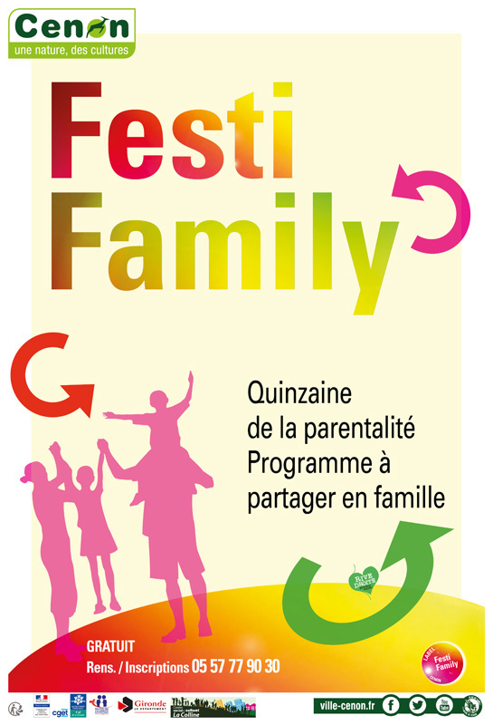
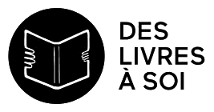

Parcours Professionnel
Vingt ans d'intervention dans les Centres Sociaux et Socioculturels

Mon parcours s'est effectué dans différentes structures associatives (loi 1901) portant des agréments Centres Sociaux délivrés par la CAF, mais la plus significative, car celle où j'ai pu occuper différents postes et évoluer de manière significative est l'association "La Colline".
Dans les paragraphes suivants, je m'attache à décrire les missions et expériences qui m'ont amené à mobiliser différentes compétences professionnelles, avec tout de même le choix d'un focus sur le travail de médiation que j'ai réalisé au sein de la structure.
En effet, c'est cette démarche de médiation et la prise de conscience de l'impact du numérique et des données dans mon environnement professionnel, qui m'ont amené à faire le choix de la LP MIND.
Dans les paragraphes suivants, je m'attache à décrire les missions et expériences qui m'ont amené à mobiliser différentes compétences professionnelles, avec tout de même le choix d'un focus sur le travail de médiation que j'ai réalisé au sein de la structure.
En effet, c'est cette démarche de médiation et la prise de conscience de l'impact du numérique et des données dans mon environnement professionnel, qui m'ont amené à faire le choix de la LP MIND.
Missions au sein du Centre Social et Culturel "La Colline"
Entre janvier 2013 et septembre 2020, j’ai occupé le poste de coordinatrice au sein de l’Association « La Colline ». Si ce poste a pris des tonalités différentes en fonction des thématiques et des projets que l’on me demandait de coordonner, les missions restaient globalement les mêmes.
Les enjeux du poste de coordination
Le Centre Social et Culturel "La Colline" ayant une taille conséquente (une vingtaine de salariés pour un budget pouvant avoisiner selon les années 900 000 €), l'association gestionnaire a pris la décision en 2013 de nommer trois coordinateurs thématiques, dont les missions étaient d'assister la direction et de mettre en œuvre la politique de l'association.
Le poste de coordinateur est très transversal, puisqu'il a pour enjeux de mettre en adéquation les choix politiques de l'association, les forces humaines (salariés et bénévoles) et les réalités budgétaires.
Ces missions sont donc multiples :
Occuper ce poste a été l'aboutissement de ma montée en compétences dans l'association à travers différentes missions (responsable du secteur enfance puis enfance-jeunesse, coordination du projet interne "Parenthèque" réunissant une ludothèque, un lieu-d'accueil enfant-parent et un centre de loisirs 3/6 ans, création et mise en place du Festival Festi Family...).
La richesse de ces missions a été source de développement professionnel à plusieurs niveaux.
Tout d'abord à propos du management de projet et d'équipe (ses enjeux, ses méthodes, ses difficultés), mais aussi concernant la prise de parole en public, le travail du partenariat, la communication, avec en fond de réflexion, la question de la transmission et de la prise de relais.
Ce questionnement et l'envie à la fois de mieux comprendre les enjeux liés au numérique, mais également de découvrir les possibilités que peuvent offrir ces outils dans ma pratique ont largement orienté mon choix de formation.
Le poste de coordinateur est très transversal, puisqu'il a pour enjeux de mettre en adéquation les choix politiques de l'association, les forces humaines (salariés et bénévoles) et les réalités budgétaires.
Ces missions sont donc multiples :
- Il participe activement à la réflexion en apportant aux administrateurs les éléments d'évolution du territoire, l'état de la recherche sur des sujets thématiques (en mettant en place une veille), en rendant compte des retours de terrain (adhérents, bénéficiaires, salariés, partenaires...), en proposant des pistes en vue de la mise en place de nouvelles solutions, en partageant l'observation d'expérimentations novatrices...
- Il anime la vie associative en accompagnant les personnes dans leur engagement bénévole,
- Il assure le suivi des démarches administratives (déclarations, demandes de subventions et mécénats, mise en place et suivi des conventions),
- Il co-construit la rédaction du rapport d'activités,
- Il Anime et coordonne l’équipe salariée (gestion des plannings et des congés, répartition des activités, animation des réunions d’équipe, respect de la réglementation...),
- Il participe au processus de recrutement et de formation de l'équipe,
- Il trouve et mobilise les partenaires (opérationnels et financiers),
- Il représente l'association auprès des partenaires sur les aspects techniques des thématiques qu'il anime,
- Il assure la coordination générale des actions et projets (plannings, échéances, budgets, matériel...) et contribue au développement de nouvelles activités et de nouveaux projets en lien avec les bénévoles, les salariés et les partenaires,
- Il coordonne l’organisation d’événements mis en place par l’association (Festivals, conférences, expositions, animations de quartier...) et participe à des événements extérieurs
Occuper ce poste a été l'aboutissement de ma montée en compétences dans l'association à travers différentes missions (responsable du secteur enfance puis enfance-jeunesse, coordination du projet interne "Parenthèque" réunissant une ludothèque, un lieu-d'accueil enfant-parent et un centre de loisirs 3/6 ans, création et mise en place du Festival Festi Family...).
La richesse de ces missions a été source de développement professionnel à plusieurs niveaux.
Tout d'abord à propos du management de projet et d'équipe (ses enjeux, ses méthodes, ses difficultés), mais aussi concernant la prise de parole en public, le travail du partenariat, la communication, avec en fond de réflexion, la question de la transmission et de la prise de relais.
Ce questionnement et l'envie à la fois de mieux comprendre les enjeux liés au numérique, mais également de découvrir les possibilités que peuvent offrir ces outils dans ma pratique ont largement orienté mon choix de formation.
La coordination culturelle
L'une des missions confiées aux Centres Sociaux et Culturel, notamment parce qu'ils sont implantés majoritairement en ZUS (Zone Urbaine Sensible), QPV (Quartiers Politique de la Ville) ou en zone rurale, est de rendre la Culture accessible à des publics particulièrement éloignés de ces questions (pour des raisons, entre autres, de représentation, de financement ou d'accessibilité). Cette question est tellement prégnante, que l'association "La Colline", en a fait l'un des axes de son projet social 2020/2023.
Étant persuadée que l'accès à la Culture ne peut se faire sans les parents (il me semble qu'il est peu probable qu'un enfant puisse faire seul la démarche d'assister à un spectacle ou aille visiter une exposition), je suis particulièrement attachée aux démarches qui sensibilisent les adultes et qui s'adressent à leur capacité de transmission.
L'association m'a donc confié la coordination des projets culturels de la structure.
Les projets culturels sont nombreux en Centre Social et Culturel, car ils sont une entrée riche pour le travail d'accompagnement, de développement de soi, d'expression, de collaboration, mais également de sensibilisation, de lutte contre l'illettrisme, contre les discriminations, les violences... Autant de sujets abordés dans les structures socioculturelles.
Les deux projets présentés ci-après ont eu un impact fort sur l'association, car ils ont engagé un partenariat étendu, mais le choix est ici motivé par l'impact qu'aurait pu avoir la formation LP MIND sur ma pratique professionnelle dans ces deux exemples.
En effet, les apports de la LP MIND, m'ont amené à réfléchir à la manière dont j'aurais pu procéder, à la fois pour rendre ces projets, selon la formule consacrée, plus "agiles", mais également pour consolider un archivage, utile à la transmission et à la pérennité des projets, rendre plus efficace la communication interne et externe au projet et enfin, stimuler la participation des partenaires et des bénévoles.
Étant persuadée que l'accès à la Culture ne peut se faire sans les parents (il me semble qu'il est peu probable qu'un enfant puisse faire seul la démarche d'assister à un spectacle ou aille visiter une exposition), je suis particulièrement attachée aux démarches qui sensibilisent les adultes et qui s'adressent à leur capacité de transmission.
L'association m'a donc confié la coordination des projets culturels de la structure.
Les projets culturels sont nombreux en Centre Social et Culturel, car ils sont une entrée riche pour le travail d'accompagnement, de développement de soi, d'expression, de collaboration, mais également de sensibilisation, de lutte contre l'illettrisme, contre les discriminations, les violences... Autant de sujets abordés dans les structures socioculturelles.
Les deux projets présentés ci-après ont eu un impact fort sur l'association, car ils ont engagé un partenariat étendu, mais le choix est ici motivé par l'impact qu'aurait pu avoir la formation LP MIND sur ma pratique professionnelle dans ces deux exemples.
En effet, les apports de la LP MIND, m'ont amené à réfléchir à la manière dont j'aurais pu procéder, à la fois pour rendre ces projets, selon la formule consacrée, plus "agiles", mais également pour consolider un archivage, utile à la transmission et à la pérennité des projets, rendre plus efficace la communication interne et externe au projet et enfin, stimuler la participation des partenaires et des bénévoles.


La coordination numérique
Dès les années 80, les acteurs du réseau des Centres Sociaux ont repéré l'émergence de nouveaux outils qui pouvaient être utiles au fonctionnement des structures, mais pouvaient également impacter la vie des habitants des quartiers dans lesquels ils étaient implantés.
Différentes expérimentations ont été menées, avec en premier lieu une démarche vers les outils numériques comme levier pour le travail collaboratif et la communication dans le réseau, puis avec les Espaces Publics Numériques, un accompagnement des habitants, à l'utilisation des outils numériques.
La mise en place de la dématérialisation des démarches administratives accélère les demandes d'accompagnement des habitants et les Centres Sociaux font partie des structures qui sont largement sollicitées.
L'association "La Colline" propose des ateliers numériques depuis plus d'une dizaine années. Ces ateliers émergent d'une demande d'une frange de la population plus âgée, qui souhaitait se familiariser avec le fonctionnement basique d'un ordinateur et d'Internet. Mais, et même si ce type de public est encore très demandeur, les tranches d'âge se rajeunissent et on voit apparaître des besoins chez de plus en plus d'habitants, qui se trouvent régulièrement face à des difficultés pour effectuer des démarches dans leur vie quotidienne.
En parallèle de cette demande grandissante, l'association déménage en 2013 dans de nouveaux locaux, locaux, dotés par la Ville de Cenon, d'un nouveau matériel numérique (Tableaux Blancs Interactifs, tablettes, Caméra numérique, appareil photo, ordinateurs tactiles...).
L'idée pour la ville est de faire de la structure un centre social numérique. Mais cette démarche, lancée à marche forcée, est mal vécue par l'équipe professionnelle, qui, à ce moment-là, peine à s'en saisir.
À l’arrivée dans les nouveaux locaux, l’équipe n’investit que pour partie le nouveau matériel. Les démarches autour du numérique sont portées de façon individuelle, sans que l’association réfléchisse à une démarche globale.
Quelques projets sont menés auprès du public jeune, les formatrices en français langue étrangère (FLE), utilisent les Tableaux Blancs Numériques (TBI) pour dispenser leurs cours, une bénévole anime des ateliers de découverte de l’ordinateur pour une dizaine de personnes, mais la question numérique n’est pas réfléchie dans le projet social.
Pour autant, l’association constatait une demande d’accompagnement à l’utilisation du numérique de plus en plus importante des habitants, certains abandonnant leurs droits ne sachant pas utiliser les plateformes administratives, ou n’ayant pas le matériel pour.
En 2018, la personne qui était chargée de travailler sur le sujet numérique de façon globale pour l’association, quitte le Centre Social, je suis donc chargée de prendre la suite de ses missions.
Travaillant régulièrement avec le Grand Projet de Ville Rive Droite (GIP-GPV) sur les questions culturelles, je suis mise en relation avec Bordeaux Mécènes Solidaires, qui souhaitait mettre en place dès 2019 une expérimentation appelée « Quartiers Numériques ». L’idée ici était de former des structures et des professionnels à la méthode Emmaüs Connect pour favoriser l’inclusion numérique des personnes habitant les QPV. Un axe de découverte des métiers liés au numérique était également envisagé.
Plusieurs points ont motivé l’association à intégrer cette expérimentation. Tout d’abord, le projet prévoyait un temps de formation à la médiation numérique pour deux ou trois salariés, ensuite une partie du financement était consacré au salaire d’une personne ce qui permettait d’officialiser le projet et de concrétiser un début de démarche sur la question de l’inclusion numérique.
En parallèle, l’association acceptait une demande de partenariat du CCAS et du PIMM'S de Cenon, pour construire des ateliers de découverte et de pratique des plateformes administratives (CAF, Pôle Emploi, Bailleurs Sociaux…), et faisait la demande pour devenir Point Numérique CAF.
Ces projets ont été déterminants à la fois pour la structure (qui a construit son projet social 2020-2023 en incluant un axe numérique) et pour moi.
En effet, devant mettre en place une médiation au numérique sous diverses formes et devant accompagner des collègues dans cette démarche, j’ai constaté que nos connaissances n’étaient pas suffisamment solides pour pouvoir agir de façon pérenne. Nous pouvions mettre en place des ateliers d’initiation aux outils, la méthodologie de projet et notre expérience de la médiation nous permettant de structurer une offre qui répondait aux besoins des habitants. Mais je trouvais insatisfaisant de ne pas être capable d’impulser une réflexion plus construite et éclairée sur la question, par manque de connaissances.
Comme pour nombre d’autres centres sociaux, d’autres questions se posaient à l’association sur le numérique, leurs implications sur les réseaux sociaux, la qualité de l’information sur leurs sites internet, mais également, l’arborescence, l’organisation et l’archivage de leurs dossiers numériques, la protection des données.
Toutes ces thématiques traversent les structures, mais ne sont abordées que superficiellement car elles ne font pas partie du coeur de métier des Centres Sociaux, et même si j’avais l’intuition que ces sujets devaient être traités, ce n’est que pendant la formation LP MIND que j’ai réalisé l’ampleur du travail qui était à réaliser.
Différentes expérimentations ont été menées, avec en premier lieu une démarche vers les outils numériques comme levier pour le travail collaboratif et la communication dans le réseau, puis avec les Espaces Publics Numériques, un accompagnement des habitants, à l'utilisation des outils numériques.
La mise en place de la dématérialisation des démarches administratives accélère les demandes d'accompagnement des habitants et les Centres Sociaux font partie des structures qui sont largement sollicitées.
L'association "La Colline" propose des ateliers numériques depuis plus d'une dizaine années. Ces ateliers émergent d'une demande d'une frange de la population plus âgée, qui souhaitait se familiariser avec le fonctionnement basique d'un ordinateur et d'Internet. Mais, et même si ce type de public est encore très demandeur, les tranches d'âge se rajeunissent et on voit apparaître des besoins chez de plus en plus d'habitants, qui se trouvent régulièrement face à des difficultés pour effectuer des démarches dans leur vie quotidienne.
En parallèle de cette demande grandissante, l'association déménage en 2013 dans de nouveaux locaux, locaux, dotés par la Ville de Cenon, d'un nouveau matériel numérique (Tableaux Blancs Interactifs, tablettes, Caméra numérique, appareil photo, ordinateurs tactiles...).
L'idée pour la ville est de faire de la structure un centre social numérique. Mais cette démarche, lancée à marche forcée, est mal vécue par l'équipe professionnelle, qui, à ce moment-là, peine à s'en saisir.
À l’arrivée dans les nouveaux locaux, l’équipe n’investit que pour partie le nouveau matériel. Les démarches autour du numérique sont portées de façon individuelle, sans que l’association réfléchisse à une démarche globale.
Quelques projets sont menés auprès du public jeune, les formatrices en français langue étrangère (FLE), utilisent les Tableaux Blancs Numériques (TBI) pour dispenser leurs cours, une bénévole anime des ateliers de découverte de l’ordinateur pour une dizaine de personnes, mais la question numérique n’est pas réfléchie dans le projet social.
Pour autant, l’association constatait une demande d’accompagnement à l’utilisation du numérique de plus en plus importante des habitants, certains abandonnant leurs droits ne sachant pas utiliser les plateformes administratives, ou n’ayant pas le matériel pour.
En 2018, la personne qui était chargée de travailler sur le sujet numérique de façon globale pour l’association, quitte le Centre Social, je suis donc chargée de prendre la suite de ses missions.
Travaillant régulièrement avec le Grand Projet de Ville Rive Droite (GIP-GPV) sur les questions culturelles, je suis mise en relation avec Bordeaux Mécènes Solidaires, qui souhaitait mettre en place dès 2019 une expérimentation appelée « Quartiers Numériques ». L’idée ici était de former des structures et des professionnels à la méthode Emmaüs Connect pour favoriser l’inclusion numérique des personnes habitant les QPV. Un axe de découverte des métiers liés au numérique était également envisagé.
Plusieurs points ont motivé l’association à intégrer cette expérimentation. Tout d’abord, le projet prévoyait un temps de formation à la médiation numérique pour deux ou trois salariés, ensuite une partie du financement était consacré au salaire d’une personne ce qui permettait d’officialiser le projet et de concrétiser un début de démarche sur la question de l’inclusion numérique.
En parallèle, l’association acceptait une demande de partenariat du CCAS et du PIMM'S de Cenon, pour construire des ateliers de découverte et de pratique des plateformes administratives (CAF, Pôle Emploi, Bailleurs Sociaux…), et faisait la demande pour devenir Point Numérique CAF.
Ces projets ont été déterminants à la fois pour la structure (qui a construit son projet social 2020-2023 en incluant un axe numérique) et pour moi.
En effet, devant mettre en place une médiation au numérique sous diverses formes et devant accompagner des collègues dans cette démarche, j’ai constaté que nos connaissances n’étaient pas suffisamment solides pour pouvoir agir de façon pérenne. Nous pouvions mettre en place des ateliers d’initiation aux outils, la méthodologie de projet et notre expérience de la médiation nous permettant de structurer une offre qui répondait aux besoins des habitants. Mais je trouvais insatisfaisant de ne pas être capable d’impulser une réflexion plus construite et éclairée sur la question, par manque de connaissances.
Comme pour nombre d’autres centres sociaux, d’autres questions se posaient à l’association sur le numérique, leurs implications sur les réseaux sociaux, la qualité de l’information sur leurs sites internet, mais également, l’arborescence, l’organisation et l’archivage de leurs dossiers numériques, la protection des données.
Toutes ces thématiques traversent les structures, mais ne sont abordées que superficiellement car elles ne font pas partie du coeur de métier des Centres Sociaux, et même si j’avais l’intuition que ces sujets devaient être traités, ce n’est que pendant la formation LP MIND que j’ai réalisé l’ampleur du travail qui était à réaliser.
La construction d'un projet social
Pour pouvoir être Centre Social et Culturel, une association doit, tous les quatre ans, demander un agrément à la CAF. Cette demande présente obligatoirement trois parties :
Durant la période où j'ai travaillé pour l'association, j'ai vécu plusieurs demandes d'agrément et expérimenté plusieurs méthodes de récolte de données (entretiens, questionnaires, réunions participatives (World Café, Méta plan...), récoltes de "données froides" auprès des Institutions...). Après avoir suivi la Licence Professionnelle MIND, mon regard sur cette collecte, la façon (souvent très artisanale) dont nous construisions les bases de données et celles dont nous analysions ces données est beaucoup plus critique. Ceci étant, et même si les méthodes sont perfectibles, certaines ont été très intéressantes à mener.
Ce qui fait particulièrement écho pour moi avec la LP MIND, c'est le travail de récolte de données auprès des Institutions (INSEE, Ville, CAF), et qui me fait me positionner aujourd'hui en faveur de l'ouverture des données et de la formation des professionnels pour les rendre autonomes quant à la récupération de ces données et leur manipulation (avec en parallèle, un travail de formation des professionnels des institutions sur la documentation des jeux de données.)
En effet, j'ai pu rencontrer certaines difficultés pour trouver des données qui correspondaient à nos besoins de diagnostic et surtout, je serais aujourd'hui plus attentive aux biais et aux interprétations que nous pouvons faire de certains jeux de données.
Le fait d'avoir également suivi les cours de méthodologie de recueil de données et notamment l'utilisation des outils numériques dans la démarche, m'ouvre de nouvelles perspectives, et me permet d'entrevoir de nouvelles façons de réaliser un diagnostic, sans parler de la mise en valeur de ces données par la visualisation.
- l'évaluation du précédent projet social
- un diagnostic de territoire
- la proposition d'un nouveau projet social
Durant la période où j'ai travaillé pour l'association, j'ai vécu plusieurs demandes d'agrément et expérimenté plusieurs méthodes de récolte de données (entretiens, questionnaires, réunions participatives (World Café, Méta plan...), récoltes de "données froides" auprès des Institutions...). Après avoir suivi la Licence Professionnelle MIND, mon regard sur cette collecte, la façon (souvent très artisanale) dont nous construisions les bases de données et celles dont nous analysions ces données est beaucoup plus critique. Ceci étant, et même si les méthodes sont perfectibles, certaines ont été très intéressantes à mener.
Ce qui fait particulièrement écho pour moi avec la LP MIND, c'est le travail de récolte de données auprès des Institutions (INSEE, Ville, CAF), et qui me fait me positionner aujourd'hui en faveur de l'ouverture des données et de la formation des professionnels pour les rendre autonomes quant à la récupération de ces données et leur manipulation (avec en parallèle, un travail de formation des professionnels des institutions sur la documentation des jeux de données.)
En effet, j'ai pu rencontrer certaines difficultés pour trouver des données qui correspondaient à nos besoins de diagnostic et surtout, je serais aujourd'hui plus attentive aux biais et aux interprétations que nous pouvons faire de certains jeux de données.
Le fait d'avoir également suivi les cours de méthodologie de recueil de données et notamment l'utilisation des outils numériques dans la démarche, m'ouvre de nouvelles perspectives, et me permet d'entrevoir de nouvelles façons de réaliser un diagnostic, sans parler de la mise en valeur de ces données par la visualisation.
Le choix de la Licence Professionnelle Médiations de l’Information Numérique et des Données
Depuis plusieurs années, je ressentais le besoin de faire le point sur mes compétences pour réfléchir à la direction que je souhaitais donner à ma carrière professionnelle. Le premier confinement a donc été l’opportunité de réaliser un bilan de compétences et de choisir une formation qui répondait à mon besoin d’élargir mes compétences, tout en me permettant de m’appuyer sur mon expérience.
De plus, à la faveur de différentes rencontres et mon conjoint ayant fait une reconversion pour devenir développeur, je prenais conscience que l’univers du numérique m’intéressait et que j’y trouvais une stimulation intellectuelle certaine.
Je recherchais une formation diplômante, qui m’apporte de nouvelles connaissances à la fois techniques dans l’utilisation de nouveaux outils et théoriques. Une formation qui réponde à ma curiosité de plus en plus vive de l’utilisation du numérique dans ma réalité professionnelle, qui approfondisse mes connaissances communicationnelles et les croise avec l’utilisation de nouveaux outils, c’est pour toutes ces raisons que j’ai choisi de postuler à la LP MIND.
De plus, à la faveur de différentes rencontres et mon conjoint ayant fait une reconversion pour devenir développeur, je prenais conscience que l’univers du numérique m’intéressait et que j’y trouvais une stimulation intellectuelle certaine.
Je recherchais une formation diplômante, qui m’apporte de nouvelles connaissances à la fois techniques dans l’utilisation de nouveaux outils et théoriques. Une formation qui réponde à ma curiosité de plus en plus vive de l’utilisation du numérique dans ma réalité professionnelle, qui approfondisse mes connaissances communicationnelles et les croise avec l’utilisation de nouveaux outils, c’est pour toutes ces raisons que j’ai choisi de postuler à la LP MIND.